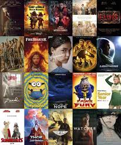

In this project we developed an advanced detection system for early-stage wildfires using CNNs, Transformers, and hybrid architectures. Engineered solution focused on RGB image analysis to enhance environmental monitoring capabilities.

In this project we implemented a U-Hierarchical Dilated Network (U-HDN) architecture to detect structural cracks in concrete, leveraging deep learning techniques like CNNs and encoder-decoder networks. Achieved high detection accuracy through innovative feature extraction and model comparison.

In this project we conducted comprehensive network analysis of Chicago taxi data to uncover urban mobility patterns. Applied graph theory and community detection algorithms to identify key transportation hubs and route optimization opportunities.

In this project we engineered a machine learning system to predict COVID-19 cases by analyzing patient symptoms and risk factors. Implemented and compared multiple algorithms including Decision Trees, Logistic Regression, and K-nearest neighbors for optimal prediction accuracy.

In this project we engineered an advanced stock price prediction system using multiple deep learning architectures (CNN, GRU, LSTM) achieving high prediction accuracy. Implemented comprehensive data preprocessing and feature engineering pipelines, achieving mean squared errors of 10^-9. Developed using TensorFlow, Keras, NumPy, and Pandas with a modular architecture for easy model comparison and enhancement.

In this project we explore the data of Covid-19 Dataset using a SQL Server.

In this project we display Covid-19 information using Tableau Dashboard.

In this project we developed a personalized movie recommendation system using collaborative filtering and association rule mining techniques. Implemented data analysis pipelines using R, leveraging the arules package and tidyverse for data manipulation. Created interactive visualizations using arulesViz to provide insights into user preferences and movie selection patterns.

In this project we look at what variables affect the gross revenue of movies.
Fall 2023
In this project we developed a full-stack web application for COVID-19 prediction using Flask, integrating multiple machine learning models (Random Forest, Gradient Boosting, Neural Network) to analyze symptoms and risk factors. Created an intuitive user interface with HTML/CSS, implemented A/B testing for model optimization, and utilized data visualization tools for risk factor insights. Built with Python, scikit-learn, Matplotlib, and Seaborn, following software development best practices including version control and comprehensive documentation..